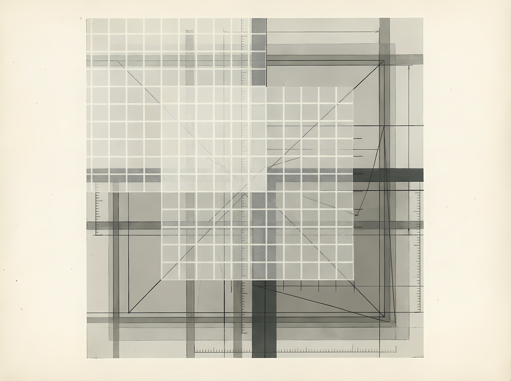
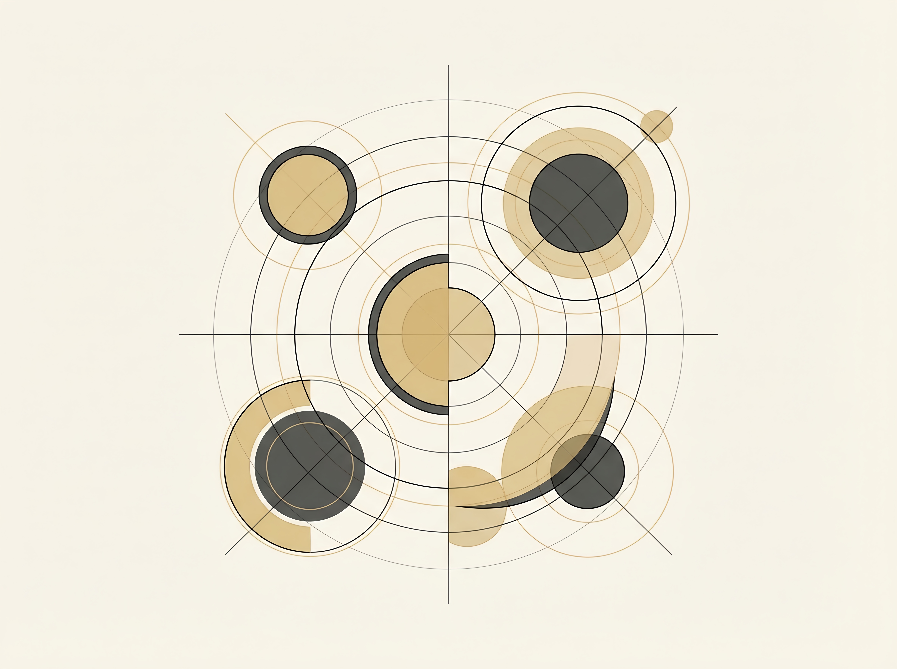

This line of inquiry examines symbolic systems as carriers of meaning that operate beyond syntax and formal logic alone. Rather than treating symbols as static representations, the research explores how symbolic structures encode context, transformation, and constraint, and how these properties relate to computational formalisms.
How do symbolic systems encode, preserve, and transform meaning in ways that exceed purely formal or syntactic computation?

This theme addresses how knowledge systems are constructed, legitimised, and maintained. Scientific methods are examined not as neutral procedures, but as symbolic and structural systems shaped by historical, cultural, and epistemic commitments.
What structural assumptions govern different epistemological frameworks, and how do these assumptions shape what can be known?
This line of inquiry investigates emergence as a structural phenomenon rather than an anomaly. It focuses on how complexity arises from constrained systems, and how mathematical, geometric, and combinatorial structures give rise to unexpected order.
How does emergent structure arise within formal systems, and what roles do resonance, constraint, and geometry play in this process?

This topic explores how intention, choice, and meaning can be represented spatially and geometrically. Rather than modelling cognition as purely symbolic or numerical, the work investigates interfaces that make structure perceptible and navigable.
How can intention and decision-making be represented geometrically as structured transformations rather than abstract choices?
This line of inquiry studies divinatory and cultural symbolic systems as embedded logics and decision technologies. These systems are examined structurally, without mystification, as early forms of symbolic computation and epistemic navigation.
How do cultural symbolic technologies operate as structured decision frameworks rather than belief systems?
RDCJ Research operates as a laboratory rather than a publication pipeline. The work begins with questions, but it does not assume that the quickest route to an answer is the most truthful one. Inquiry is treated as a structural practice: building conceptual scaffolds, testing mappings across domains, and allowing formalisms to emerge when they can be justified rather than when they are demanded.
The aim is not to replace established scientific or mathematical methods, but to examine the conditions under which different methods become valid, useful, or misleading, especially in domains where meaning, interpretation, and human cognition are part of the system being studied.
The method is intentionally slow: it privileges structural clarity, comparative mapping, and publishable artefacts over premature convergence.